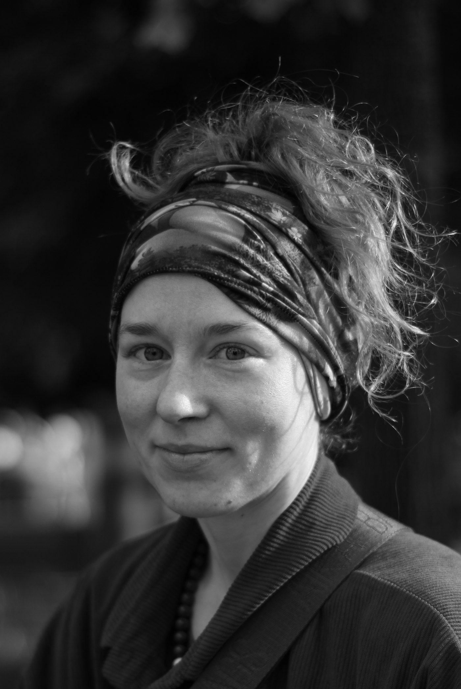

CARPE DIEM
Здесь нет ничего, кроме любви.
Смотреть работы ↓
Утиные истории2026
РАБОТЫ
О СЕБЕ

Соня Енокаева, художница из Москвы, которая выстраивает свою практику через постоянное обучение и внимательное отношение к миру.
Она работает с преподавателями-художниками и продолжает образование через книги и картины своих предшественников. Ей не страшно пробовать новое и ошибаться. Она уверена в своей практике и чувствует огромную энергию, которая проходит через неё в работы.
Ей близка мысль о том, что картина или рисунок похожи на батарейку: художник заряжает их собой, а затем они передают этот заряд зрителю.
Соня смотрит на мир не глазами, а сердцем. Она любит его так сильно, что даже в не самых красивых вещах находит что-то интересное.
CV
РЕАКТОР — лаборатория современного искусства, Казань
«Творческий маршрут» — групповая выставка, Москва
Мастерские, пленэры и занятия у практикующих художников
КОНТАКТЫ
Выставки, проекты,
сотрудничество и покупка работ.